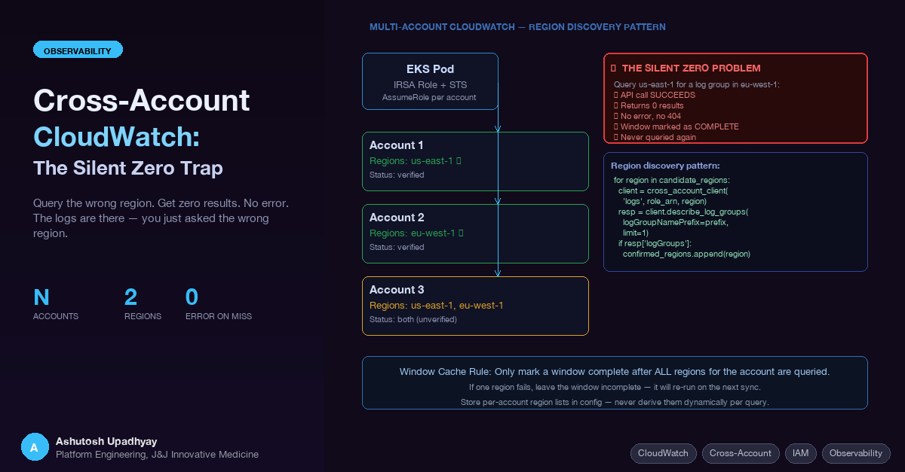

You query CloudWatch. You get zero results. No error. The logs are there — in a different region. Here's how to build multi-account CloudWatch extraction that doesn't silently fail.
We built a system that queries AWS CloudWatch Logs across multiple AWS accounts to extract AI model usage data. Each account logs model invocations to a CloudWatch log group. The goal: consolidate all usage into one dashboard — a unified view of who is calling what model, at what cost, across the entire organisation.
The architecture looked simple enough. One EKS pod with an IRSA role. The IRSA role can assume a target role in each account. Each target role has logs:FilterLogEvents and logs:DescribeLogGroups. The pod iterates accounts, queries CloudWatch in fixed time windows, and stores results in SQLite. We had it working on the first account within a day.
Then we onboarded the second account. The sync ran cleanly — no errors, no exceptions. Every time window came back empty. We assumed the account just hadn't been using the service much. Three weeks later we discovered the log group existed in eu-west-1. We had been querying us-east-1. Every window was cached as complete with zero records. We had to reset and reprocess from scratch.
This post covers the exact trap, why it's silent, how to prevent it, and how to build a sync architecture that fails loudly instead of quietly.
The trust chain is: EKS pod → IRSA role in home account → sts:AssumeRole → per-account target role. (The IRSA + cross-account AssumeRole pattern is covered in depth in the companion post — here we focus on the CloudWatch-specific pieces.)
The target role policy for CloudWatch extraction:
{
"Effect": "Allow",
"Action": [
"logs:FilterLogEvents",
"logs:DescribeLogGroups",
"logs:GetLogEvents"
],
"Resource": "arn:aws:logs:*:TARGET_ACCOUNT_ID:log-group:/aws/example*:*"
}Note the wildcard on region (*) in the Resource ARN. This is intentional — the role must work in whatever region the log group lives in, which you may not know up front. Locking it to a specific region at the IAM level would create a different but equally silent failure: AccessDenied only surfaces if you try to use the correct region, not if you're querying the wrong one.
CloudWatch is a regional service. Log groups exist in a specific AWS region. There are three distinct ways a wrong-region query produces silence rather than a clear error — understanding all three matters because they need different fixes.
Mechanism 1: describe_log_groups in the wrong region returns an empty list, no error. When you probe a region for a log group prefix using describe_log_groups, and the log group lives in a different region, the API returns {"logGroups": []} — success, no exception, no 404. Your discovery code sees zero groups, concludes the log group doesn't exist, and doesn't add that region to the account's config. This is the mechanism that caused our incident: the discovery probe ran against us-east-1, found nothing, and no windows were created for eu-west-1.
Mechanism 2: Exception-swallowing converts a loud failure into silence. FilterLogEvents does raise ResourceNotFoundException (HTTP 400) when the log group doesn't exist in that region. But discovery code with a broad except Exception: pass swallows that exception silently. The region isn't added to the confirmed list — but no one knows why. There's no log line, no alert, no counter. From the outside: the account just has no data.
Mechanism 3: Log group exists in both regions, but events are only in one. A log group provisioned in two regions (IaC that creates it everywhere, or a service that auto-creates on first use) will show up in both discovery probes. FilterLogEvents succeeds in both regions. The "wrong" region returns zero events with no error — a genuine empty result indistinguishable from "nothing happened in this window."
The consistent failure pattern across all three mechanisms: the sync job completes successfully, every window is marked complete with zero records, no alarms fire, and the dashboard shows zero for the affected account. Without per-account record-count anomaly detection, you won't notice for days or weeks. The data isn't lost permanently — it's still in CloudWatch — but the extraction windows are cached as done. You'll need to clear the cache and re-run from scratch for that account.
This is exactly what happened with our second account. The onboarding discovery probe ran against us-east-1, found nothing (Mechanism 1), and no extraction windows were created. When we later added the account manually with regions: ["us-east-1"], the sync ran without errors — FilterLogEvents returned empty pages, each window completed, and 90 days of history was marked as zero-record. The actual log group was in eu-west-1 the entire time.
You cannot assume all accounts in your organisation log to the same region. Even within a single organisation:
In practice, once you have five or more accounts you will find at least one that diverges from the pattern you assumed. The only safe approach is to discover and record the correct regions per account, explicitly.
Before running any extraction, probe each account to find which regions actually contain the log group:
import boto3
def discover_log_group_regions(
role_arn: str,
log_group_prefix: str,
candidate_regions: list[str]
) -> list[str]:
"""Return regions where the log group prefix exists."""
confirmed = []
for region in candidate_regions:
client = get_cross_account_client('logs', role_arn, region)
try:
resp = client.describe_log_groups(
logGroupNamePrefix=log_group_prefix,
limit=1
)
if resp.get('logGroups'):
confirmed.append(region)
except client.exceptions.ResourceNotFoundException:
pass # log group doesn't exist in this region — normal, move on
except Exception as e:
# Don't silently swallow unexpected errors — log them so you know why
# a region was skipped. Broad except: pass is how silent zeros happen.
print(f"Warning: region {region} check failed: {e}")
return confirmedRun this once per account during onboarding. Store the result explicitly in your per-account configuration — do not re-derive it on every sync run:
[
{
"account_id": "ACCOUNT_1",
"role_arn": "arn:aws:iam::ACCOUNT_1:role/ReadRole",
"regions": ["us-east-1"],
"_comment": "Verified 2026-08-01: us-east-1 only"
},
{
"account_id": "ACCOUNT_2",
"role_arn": "arn:aws:iam::ACCOUNT_2:role/ReadRole",
"regions": ["eu-west-1"],
"_comment": "Verified 2026-08-01: eu-west-1 only"
},
{
"account_id": "ACCOUNT_3",
"role_arn": "arn:aws:iam::ACCOUNT_3:role/ReadRole",
"regions": ["us-east-1", "eu-west-1"],
"_comment": "Not yet verified — querying both until confirmed"
}
]The two-region entry for Account 3 costs one extra API call per sync window until you've verified it. That is a cheap price for correctness. Once you run a real extraction and confirm which region returns data, narrow the list to one.
Don't run discovery on every sync. describe_log_groups is a cheap probe, but running it on every window turns a one-time onboarding cost into N × W overhead (N accounts, W windows). Discover once during onboarding, store in config, update only when an account is reconfigured or a new log group is enabled.
For incremental extraction across large time ranges, use fixed-size time windows aligned to known boundaries (UTC midnight works well for 12-hour windows):
from datetime import datetime, timedelta, timezone
WINDOW_HOURS = 12
def get_windows(start: datetime, end: datetime) -> list[tuple]:
windows = []
current = start
while current < end:
window_end = min(current + timedelta(hours=WINDOW_HOURS), end)
windows.append((current, window_end))
current = window_end
return windowsThe critical design rule: track window completion per account per region, not per account. If Account 3 queries both us-east-1 and eu-west-1, each (account_id, region, window_start) combination is a separate record in the completion table.
def sync_account(account: dict, db):
for region in account['regions']:
client = get_cached_client('logs', account['role_arn'], region)
for start, end in get_incomplete_windows(account['account_id'], region, db):
events = query_window(client, account['log_group'], start, end)
store_events(events, db)
mark_window_complete(account['account_id'], region, start, end, db)A failure in one region does not mark the window complete for that region. The next run will retry it. Only after a window has been successfully extracted for all regions listed for that account should the window be considered done.
SQLite schema for window tracking:
CREATE TABLE query_windows (
account_id TEXT NOT NULL,
region TEXT NOT NULL,
window_start INTEGER NOT NULL, -- Unix timestamp ms
window_end INTEGER NOT NULL,
completed_at INTEGER, -- NULL = not yet complete
record_count INTEGER DEFAULT 0,
PRIMARY KEY (account_id, region, window_start)
);The composite primary key on (account_id, region, window_start) ensures each region is tracked independently per account.
There are two main CloudWatch APIs for extracting log data, and they have meaningfully different characteristics for bulk extraction.
FilterLogEvents uses simple filter patterns against log stream content. It paginates fully using nextToken — there is no row cap. If a time window contains 500,000 matching events, you will get all 500,000 across as many pages as needed. This makes it the right choice for complete extraction when you know the log format.
def query_window(
client,
log_group: str,
start: datetime,
end: datetime
) -> list:
events = []
kwargs = {
'logGroupName': log_group,
'startTime': int(start.timestamp() * 1000),
'endTime': int(end.timestamp() * 1000),
'limit': 10000
}
while True:
resp = client.filter_log_events(**kwargs)
events.extend(resp.get('events', []))
next_token = resp.get('nextToken')
if not next_token:
break
kwargs['nextToken'] = next_token
return eventsCloudWatch Logs Insights supports SQL-like queries and is better suited for aggregation and analytics. However, it has a hard 10,000-result limit per query — you cannot paginate past it. For complete extraction of all events in a time window, FilterLogEvents with full pagination is more reliable. Use Logs Insights for analytical queries where you want summaries, not for bulk data extraction.
STS assumed-role credentials default to a 1-hour TTL. A sync job that processes 90 days of windows across six accounts can easily exceed one hour. Without credential renewal, the job hits ExpiredTokenException mid-run — usually on a window that was already partially processed, leaving the window in an ambiguous state.
Use a credential cache with proactive renewal — refresh 5 minutes before expiry:
from datetime import datetime, timezone
import boto3
_cred_cache: dict = {}
def get_cached_client(service: str, role_arn: str, region: str):
key = (service, role_arn, region)
if key in _cred_cache:
kwargs, expiry = _cred_cache[key]
remaining = (expiry - datetime.now(timezone.utc)).total_seconds()
if remaining > 300: # 5-minute buffer
return boto3.client(service, region_name=region, **kwargs)
sts = boto3.client('sts')
assumed = sts.assume_role(
RoleArn=role_arn,
RoleSessionName='cloudwatch-sync-session'
)
c = assumed['Credentials']
kw = dict(
aws_access_key_id=c['AccessKeyId'],
aws_secret_access_key=c['SecretAccessKey'],
aws_session_token=c['SessionToken']
)
_cred_cache[key] = (kw, c['Expiration'])
return boto3.client(service, region_name=region, **kw)The cache is keyed by (service, role_arn, region) because each unique combination requires its own set of credentials. The 5-minute buffer gives plenty of time to complete the current window before expiry forces a renewal on the next window boundary.
| Check | How to verify |
|---|---|
| Log group exists in the configured region | Run describe_log_groups with the prefix during account onboarding; must return at least one group |
Target role has logs:FilterLogEvents |
Test with a 1-minute window before scheduling the full backfill |
| Region per account is explicitly configured | Discovery probe during onboarding; stored in config with verification date |
| Window cache tracks per (account, region) | Verify the DB schema has (account_id, region, window_start) as the primary key |
| STS credentials renewed before 1-hour expiry | 5-minute buffer in the cache check; test a run longer than 60 minutes |
| FilterLogEvents pagination is complete | Confirm the extraction loop checks nextToken until absent — not just the first page |
| New account uses both candidate regions until verified | Config entry includes both us-east-1 and eu-west-1 until a real run confirms which one has data |
Default to both candidate regions for every new account. Querying an extra region costs one additional API call per sync window — negligible. Querying only the wrong region means all historical data is permanently lost from your extraction (because the windows are cached as complete with zero records). The cost asymmetry is extreme: a few wasted API calls vs weeks of missing data. Configure two regions, verify which one returns data on the first real run, then narrow to one in the config.
The date comment in the config entry matters. "Not yet verified" is a signal to re-check. Once you've run a real extraction and seen which region produced records, update the comment to "Verified: us-east-1 only" with the date. This prevents the list from drifting back to two regions indefinitely.
The silent zero is particularly insidious because the system appears to be working. The sync job completes successfully. No alarms fire. The dashboard just shows zero for the affected account. Without a baseline or anomaly detection on the per-account record counts, you won't notice for days or weeks.
After the incident, we added two safeguards:
First, an onboarding verification step that must pass before any extraction windows are created for a new account. It calls describe_log_groups in every candidate region and requires at least one region to return a non-empty result. If none do, the account is flagged as "log group not found" and no windows are created — rather than silently creating windows that will all complete with zero records.
Second, a post-sync record count check. After every sync run, we compare the per-account per-window record counts against a rolling average. Accounts with consistently zero records for more than 3 consecutive windows are flagged for manual review. This catches the silent zero even if it slips through onboarding verification.
Neither safeguard is complex. Both are far cheaper than debugging missing data weeks after the fact.
describe_log_groups returning empty in the wrong region (no error), broad except Exception: pass swallowing ResourceNotFoundException from FilterLogEvents, and a log group that exists in multiple regions but only has events in one. Each needs a different fix.describe_log_groups. Store in config with a verification date. Don't re-derive on every sync.(account_id, region, window_start) — not per (account_id, window_start). A failure in one region must not mark the window complete for that region.FilterLogEvents with full nextToken pagination for complete extraction. CloudWatch Logs Insights has a hard 10,000-result cap that silently truncates large windows.ExpiredTokenException in long-running sync jobs.